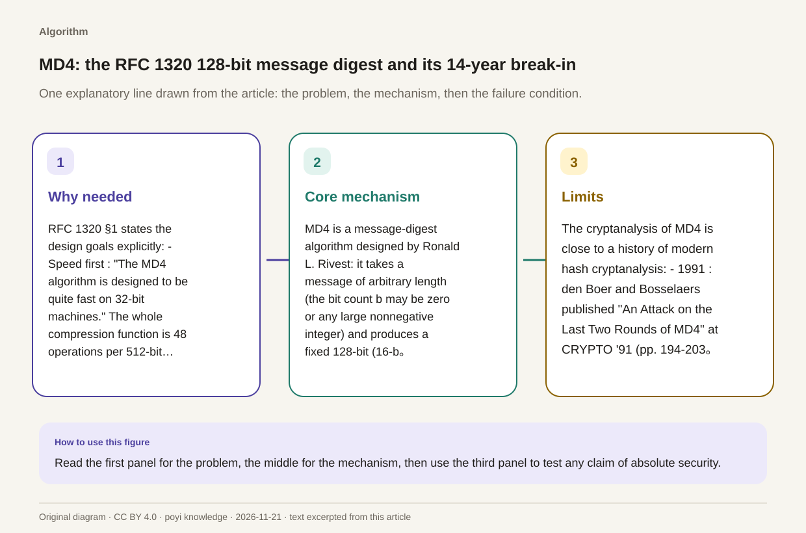
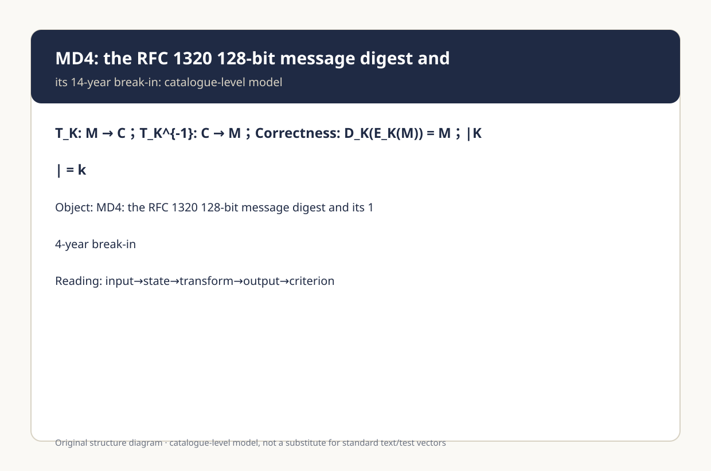

Principles
Algorithm: MD4 (MD4 散列). MD4 is a message-digest algorithm designed by Ronald L. Rivest: it takes a message of arbitrary length (the bit count b may be zero or any large nonnegative integer) and produces a fixed 128-bit (16-byte) "fingerprint" or "message digest". RFC 1320 describes it as a compression tool for digital-signature applications—compress a large file "in a secure manner" with a digest first (the source puts its own marks on the word "compressed"), then sign under a public-key cryptosystem such as RSA. Basic parameters: the message is processed in 512-bit blocks (16 32-bit words); the state is four 32-bit registers A, B, C, D; the output is 128 bits. RFC 1320 Section 2 fixes the conventions: a "word" is a 32-bit quantity; byte strings are interpreted as words with the "low-order (least significant) byte given first" (little-endian); "+" is addition modulo 2^32; X <<< s is a 32-bit left rotation; not(X), X v Y, X xor Y, XY are bitwise NOT, OR, XOR and AND. The digest is computed in five steps (RFC 1320 Section 3):
- Padding (§3.1): append a single "1" bit (the byte 0x80 in practice), then "0" bits until the message length "becomes congruent to 448, modulo 512"; "In all, at least one bit and at most 512 bits are appended". Padding is always performed, even when the length is already congruent to 448. Append length (§3.2): append the pre-padding length b as a 64-bit little-endian value (low-order 32-bit word first). The padded message is now "an exact multiple of 512 bits"; call its words M[0..N-1]. Initialize the buffer (§3.3): the four registers are initialized, "low-order bytes first" (this copy breaks the phrase between bytes and first), to
- word A:
01 23 45 67(the word 0x67452301) - word B:
89 ab cd ef(the word 0xefcdab89) - word C:
fe dc ba 98(the word 0x98badcfe) - word D:
76 54 32 10(the word 0x10325476)
- word A:
This IV has a hand-computable property: C = not(A) and D = not(B). Process each block (§3.4): each block undergoes 48 operations using one of three auxiliary functions, then a feed-forward add. Each function takes three 32-bit words and returns one:
F(X,Y,Z) = XY v not(X) Z— a bitwise conditional: if X then Y else Z;G(X,Y,Z) = XY v XZ v YZ— a bitwise majority function;H(X,Y,Z) = X xor Y xor Z— a bitwise parity function. The notation[abcd k s]meansa = (a + Φ(b,c,d) + X[k] (+ K)) <<< s, where Φ is the current round's function. Within each round the register roles rotate ABCD → DABC → CDAB → BCDA. The three rounds use these word orders, rotation amounts and constants:- Round 1 (F, no constant): k = 0,1,…,15; s cycles (3, 7, 11, 19). - Round 2 (G, K = 0x5a827999): k = 0,4,8,12,1,5,9,13,2,6,10,14,3,7,11,15; s cycles (3, 5, 9, 13). - Round 3 (H, K = 0x6ed9eba1): k = 0,8,4,12,2,10,6,14,1,9,5,13,3,11,7,15; s cycles (3, 9, 11, 15). Feed-forward and output (§3.4-3.5): after each block, add back
A = A + AAand so on; after the last block, output the 16 bytes starting with the low-order byte of A and ending with the high-order byte of D. The note to RFC 1320 §3.4 explains the two round constants: the value 5A827999 "is a hexadecimal 32-bit constant, written with the high-order digit first", that "represents the square root of 2" with octal value 013240474631, and 6ED9EBA1 "represents the square root of 3" with octal value 015666365641; the RFC cites Knuth, The Art of Computer Programming, Volume 2 (Seminumerical Algorithms), second edition, Table 2, page 660.

Why it matters
RFC 1320 §1 states the design goals explicitly:
- Speed first: "The MD4 algorithm is designed to be quite fast on 32-bit machines." The whole compression function is 48 operations per 512-bit block, each with two or three mod-2^32 adds (function value, message word, optional round constant), a bitwise function and a rotation—all native 32-bit instructions. - Compact, no big tables: "the MD4 algorithm does not require any large substitution tables; the algorithm can be coded quite compactly." MD4 uses three one-line bitwise functions. - Public domain: "The MD4 algorithm is being placed in the public domain for review and possible adoption as a standard." Note that what is placed in the public domain is the algorithm itself; the appendix reference code still carries RSA Data Security's copyright and license notice. - Signature use: the goal is to compress a large file "in a secure manner before being encrypted with a private (secret) key under a public-key cryptosystem such as RSA" (the source's own subject is "a large file must be").
The trade-off is also written into the RFC. §4 conjectures that finding two messages with the same digest takes "on the order of 2^64 operations," and inverting a given digest "on the order of 2^128". The "Security Considerations" section admits that because MD4 "was designed to be exceptionally fast", it is "at the edge" "in terms of risking successful cryptanalytic attack", and recommends MD5 for very high-security applications until further review is complete. History proved that self-assessment accurate: the structural simplicity bought with speed is exactly where the attacks entered.
Structurally, the IV is a simple incrementing byte pattern and the round constants are only the two simple constants the RFC note says represent √2 and √3; the round functions are not complicated against differential analysis. Every choice serves speed, size and simplicity as reported here, and understanding of differential/iterative hash attacks in 1990 was still immature.
Applications
RFC 1320 §1 gives MD4's official identity: the object identifier
md4 OBJECT IDENTIFIER ::= {iso(1) member-body(2) US(840) rsadsi(113549) digestAlgorithm(2) 4}
that is, OID 1.2.840.113549.2.4; in the X.509 AlgorithmIdentifier type the MD4 parameters should have type NULL.
Historically, PKCS #1 v1.5 allowed MD4 in RSA signature schemes. RFC 2437 (PKCS #1 v2.0, October 1998) §10.1 records this and declares: "Because of these results and others (e.g. [9]), MD4 is no longer recommended."
The most important still-running deployment of MD4 is Windows NTLM authentication. Microsoft's Open Specification MS-NLMP §3.3.1 defines the NTLM v1 NT one-way function:
Define NTOWFv1(Passwd, User, UserDom) as MD4(UNICODE(Passwd))
that is, the NT hash (the document writes the NTLM (NT) hash) is the MD4 digest of the password encoded in UTF-16LE; the §5.2 security-parameter index lists "MD4/MD5 usage in NTLM v1" under §3.3.1 and "MD4/MD5 usage in NTLM v2" under §3.3.2; Appendix A (Cryptographic Operations Reference) defines MD4(M) as "the computation of an MD4 message digest" of the null-terminated "byte string M" (the source breaks the compound null-terminated across ms-nlmp.txt:4560/4561, so the whole phrase is not quotable verbatim). A frequently quoted consequence: the NT hash of an empty password equals the RFC 1320 test-suite value MD4("") = 31d6cfe0d16ae931b73c59d7e0c089c0—seeing this string in a Windows credential dump means the account password is empty.
To be clear: MD4 is unusable wherever collision resistance matters (signatures, certificates); RFC 2437's "no longer recommended" is the formal position. Its use inside NTLM is legacy-protocol compatibility, and Microsoft's own specification lists the MD4/MD5 usage as security parameters.

Limits & attacks
The cryptanalysis of MD4 is close to a history of modern hash cryptanalysis:
- 1991: den Boer and Bosselaers published "An Attack on the Last Two Rounds of MD4" at CRYPTO '91 (pp. 194-203, Springer-Verlag 1992), breaking the last two rounds of the MD4 compression function. RFC 2437 reference [9] records this result. - 1996: Hans Dobbertin published "Cryptanalysis of MD4" at FSE 1996 (LNCS 1039, pp. 55-72), giving a 128-bit collision on the full algorithm (the earlier den Boer-Bosselaers attack had targeted reduced rounds of the compression function). RFC 2437 §10.1 cited it to withdraw the recommendation; the abstract of Wang et al. 2005 puts Dobbertin's complexity at about 2^20 MD4 hash computations. - 1998: Dobbertin proved "The First Two Rounds of MD4 are Not One-Way" at FSE 1998 (LNCS 1372, pp. 284-292). RFC 2437 §10.1 cites this result as well (the paper is listed as reference [12] in its reference list). - August 2004: Xiaoyun Wang, Dengguo Feng, Xuejia Lai and Hongbo Yu submitted ePrint 2004/199, "Collisions for Hash Functions MD4, MD5, HAVAL-128 and RIPEMD" (received 2004-08-16, last revised 2004-08-17), and announced collisions for MD4, MD5, HAVAL-128 and RIPEMD at the CRYPTO 2004 rump session. - 2005: the full version by Xiaoyun Wang, Xuejia Lai, Dengguo Feng, Hui Chen and Xiuyuan Yu appeared at EUROCRYPT 2005 (LNCS 3494, Springer, DOI 10.1007/11426639_1). Its abstract gives the numbers: the new attack finds
a collision with probability 2^-2 to 2^-6(caret notation is this article's; the retained abstract prints the exponents with a minus sign and a thin space between sign and digit) and complexity no more than 2^8 MD4 hash operations; on top of it, a chosen-message pre-image attack on MD4 has complexity below 2^8 (the body clarifies this as a chosen-message second pre-image attack: first modify an arbitrary message M into a condition-satisfying M′, then find a second pre-image of M′ with probability 2^-2 to 2^-6); for a "weak" message, finding another message with the same digest costs a single MD4 computation, and a random message is weak with a probability the paper gives as 2^-122; the same attack applies directly to RIPEMD, which has two parallel MD4 copies, with collision complexity about 2^18 RIPEMD hash operations.
From the 2^64 conjecture at first publication in 1990 (stated in both RFC 1186 and RFC 1320 §4) to the actual 2^8 of 2004, MD4's collision resistance lost 56 orders of magnitude in 14 years. Today MD4 collisions are generated instantly on commodity hardware; the algorithm is fit only as the first lecture of a cryptanalysis course.
History
- October 1990: Rivest published RFC 1186, "The MD4 Message Digest Algorithm", the first public definition of MD4. - 1990: the MD4 paper was presented at CRYPTO '90 (Advances in Cryptology – CRYPTO '90, LNCS 537, pp. 303-311, Springer-Verlag 1991, DOI 10.1007/3-540-38424-3_22). RFC 1320 reference [1] cites it. - April 1992: RFC 1320, "The MD4 Message-Digest Algorithm", replaced RFC 1186; §1 says the main difference is a more portable appendix reference implementation. RFC 1320 places the algorithm in the public domain and thanks Don Coppersmith, Burt Kaliski, Ralph Merkle and Noam Nisan for comments and suggestions. Its status section states the memo provides information for the Internet community and specifies no Internet standard. - April 1992: the same author published RFC 1321, "The MD5 Message-Digest Algorithm"; RFC 1320 reference [4] already points to MD5. RFC 1321 §1 describes MD5 as "an extension of the MD4 message-digest algorithm": slightly slower than MD4 but more "conservative" in design, because MD4 was "being adopted for use more quickly than justified by the existing critical review"; MD5 "backs off a bit, giving up a little in speed for a much greater likelihood of ultimate security", incorporating reviewers' suggestions. RFC 1321 §5 lists the MD4-to-MD5 differences: a fourth round added, each step given a unique additive constant, the round-2 function g changed from (XY v XZ v YZ) to (XZ v Y not(Z)), and more. - 1996-1998: Dobbertin's full collision and two-round non-one-wayness appeared; in October 1998 RFC 2437 formally removed MD4 from the recommended list. - 2004-2005: the ePrint 2004/199 and EUROCRYPT 2005 papers by Wang et al. cut MD4 collision complexity to 2^8; the ePrint paper's title itself lists MD4, MD5, HAVAL-128 and RIPEMD as collision targets. - Lineage: the abstract of Wang et al. 2005 states that MD4 "serves as the basis for most of the dedicated hash functions such as MD5, SHAx, RIPEMD, and HAVAL"; its Merkle-Damgård iteration, bitwise-function family and word-level mixing are the shared skeleton of those functions.
Worked example & verification
Worked example
Take one published or standard test vector, record the input, the ordered steps and the byte-exact output, then compare with an independent implementation. Where no citable numeric vector is available, the entry records only structural steps and does not invent an output.
References
- Wikipedia search entry for MD4 散列. https://zh.wikipedia.org/w/index.php?search=MD4%20%E6%95%A3%E5%88%97
- Handbook of Applied Cryptography (Menezes, van Oorschot, Vanstone). https://www.cacr.math.uwaterloo.ca/hac/